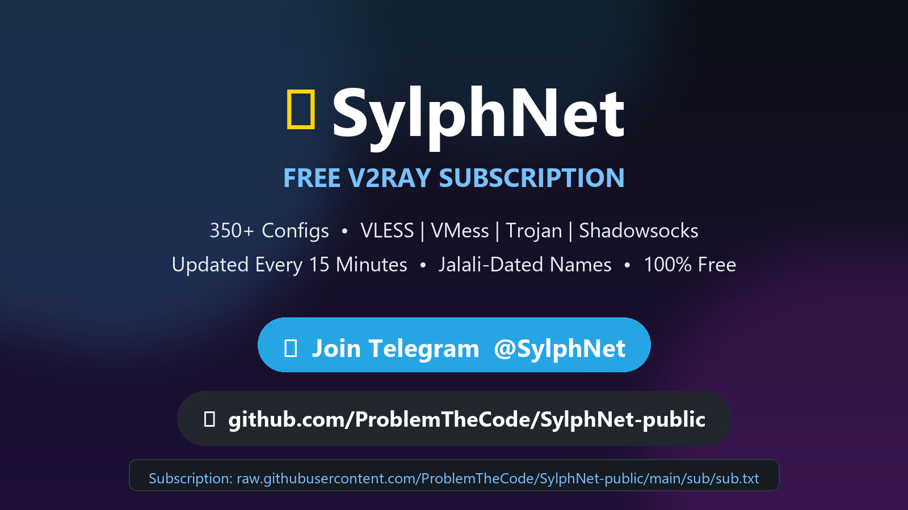

Free V2Ray Subscription — 350+ Configs • Updated Every 15 Minutes • 100% Free
📡 Get Subscription 💬 Join Telegram @SylphNet â GitHub Repohttps://raw.githubusercontent.com/ProblemTheCode/SylphNet-public/refs/heads/main/sub/sub.txt
The subscription refreshes automatically every 15 minutes. Dead configs are replaced fast.
VLESS, VMess, Trojan and Shadowsocks — one link for everything, works with every V2Ray client.
Every config is labeled @SylphNet | Jalali-Date #N so you always know how fresh it is.
No registration. No limits. No ads. Just copy the link and connect.
Copy the link above → open your V2Ray client → Subscription → Add → paste → Update → Connect. Done!
Yes — 100% free, forever. SylphNet aggregates publicly shared community configs and republishes them with clean, dated names. No accounts, no tracking, no logs.
Every 15 minutes, automatically. Update the subscription in your client before connecting for the freshest configs.
Update your subscription first. Then try another config, or switch between WiFi and mobile data — different networks block different servers.
VLESS+TLS is the best all-around choice today. Trojan looks like normal HTTPS. VMess is the classic. Your client handles them all automatically.
اشتراک رایگان V2Ray با بیش از Û³ÛµÛ° کانÙیگ (VLESSØŒ VMessØŒ TrojanØŒ Shadowsocks) Ú©Ù‡ هر Û±Ûµ دقیقه به‌صورت خودکار به‌روزرسانی می‌شود. نام همه کانÙیگ‌ها با تاریخ شمسی Ùˆ شماره مرتب است.
لینک اشتراک را Ú©Ù¾ÛŒ کنید Ùˆ در برنامه‌ی v2rayNGØŒ v2rayNØŒ HiddifyØŒ NekoBox یا Streisand اضاÙÙ‡ کنید.